Social Science
Part -1
Standard V
GOVERNMENT OF KERALA
DEPARTMENT OF GENERAL EDUCATION
Prepared by
State Council of Educational Research and Training (SCERT)
Kerala
2024
ST-299-1-SOC. SCI.(E)-5-VOL-1
Page 1
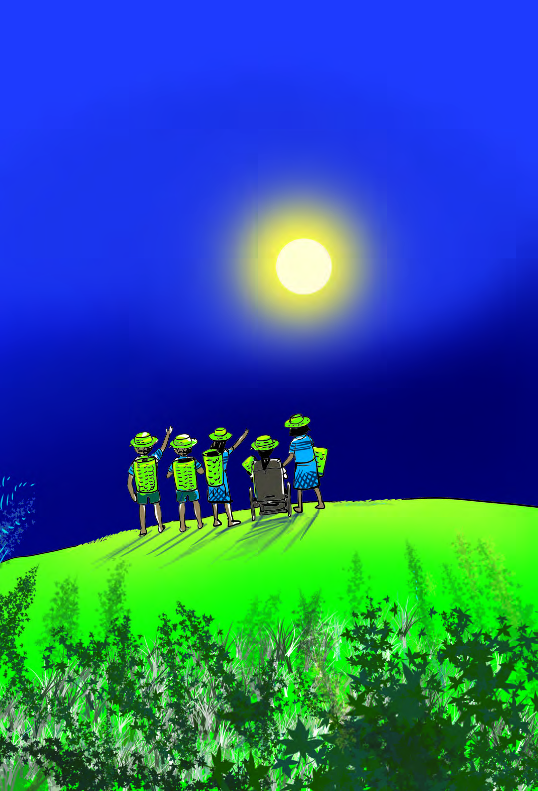
Page 2
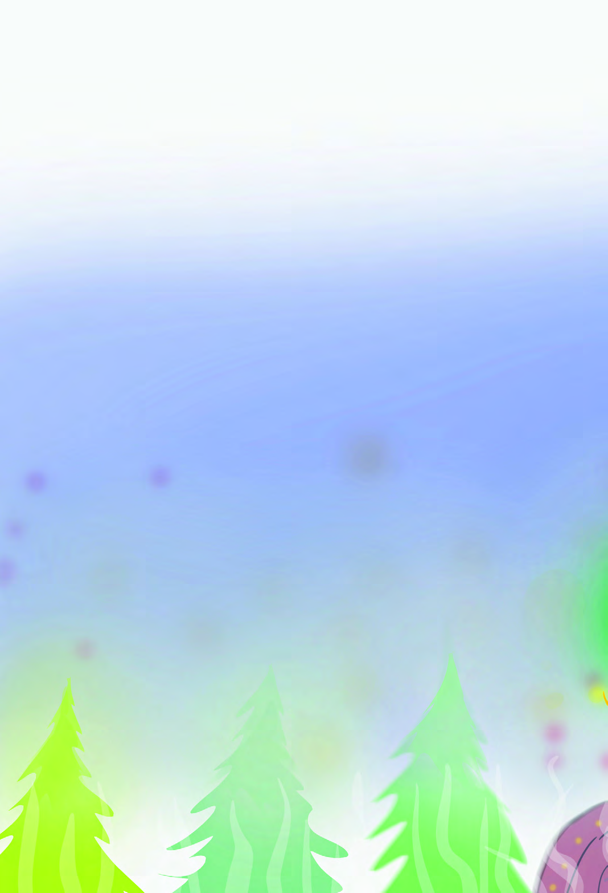
Jana-gana-mana-adhinayaka, jaya he
Bharata-bhagya-vidhata.
Punjab-Sindh-Gujarat-Maratha
Dravida-Utkala-Banga
Vindhya-Himachala-Yamuna-Ganga
Uchchala-Jaladhi-taranga.
Tava shubha name jage,
Tava shubha asisa mage,
Gahe tava jaya gatha,
Jana-gana-mangala-dayaka jaya he
Bharata-bhagya-vidhata.
Jaya he, jaya he, jaya he,
Jaya jaya jaya, jaya he!
Prepared by
State Council of Educational Research and Training (SCERT)
Poojappura, Thiruvananthapuram 695012, Kerala
Website : www.scertkerala.gov.in, e-mail : scertkerala@gmail.com
Typeset and design by : SCERT
Printed at : KBPS, Kakkanad, Kochi - 30
© Department of General Education, Government of Kerala
Social Science
India is my country. All Indians are my brothers and
sisters.
I love my country, and I am proud of its rich and varied
heritage. I shall always strive to be worthy of it.
I shall give respect to my parents, teachers, and all elders,
and treat everyone with courtesy.
To my country and my people, I pledge my devotion. In
their well-being and prosperity alone lies my happiness.
THE NATIONAL ANTHEM
PLEDGE
V
Page 3
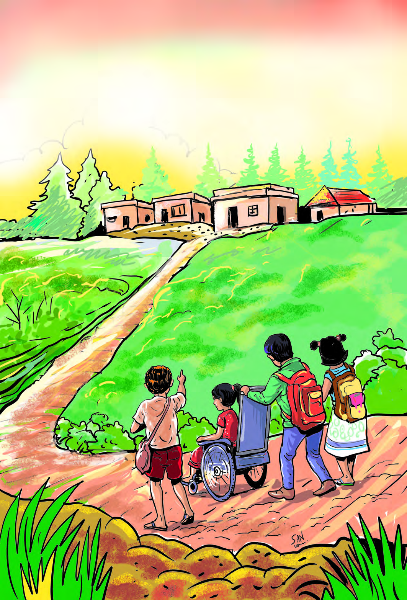
Dear Friends,
This is the Social Science Textbook for class five. In the early classes,
we learned Science and Social Science as part of Environmental
Studies. From now on, we are going to study Social Science as a
special subject. This textbook is formulated to help learn about
different socio-economic, cultural and political systems, detailing
social phenomena in the world we live in.
The first chapter, 'Peeli's Village,' is presented through illustrations
as an introductory chapter from Environmental Studies to Social
Studies. This chapter will help to build and practise knowledge
essential for social life.
The chapter 'Food and Human' discusses the origin, development
and changes of food culture. The next chapter, 'Diverse
Employments,' is helpful in recognising the diverse employments
humans engage in for a living and survival, emphasising the
importance of employment. The origin of clothing and its changes
effected by climate and culture are discussed in the chapter
'Clothing through the Ages '.
The chapter 'Let's Draw and Read' is suitable for elaborating the
importance of map reading in our daily life. 'People, by the People'
is useful for gaining basic understanding of the election process
and the governing system of the society we live in.
Hope that the Social Science Part 1 textbook, formulated according
to the social science approach of the revised Kerala Curriculum
Framework 2023, will be an asset to your future. We are confident
that this textbook will be useful in understanding society deeply
and imbibing human values.
Dr. Jayaprakash R.K.
Director SCERT
Page 4
State Council of Educational Research and Training (SCERT)
Vidyabhavan, Poojapura, Thiruvananthapuram 695 012
Academic Coordinator
Dr. Anjana V. R. Chandran
Research Officer, SCERT KERALA
Advisor
Dr. K.N. Ganesh
Chairman
Kerala Council for Historical Research
Dr. Nandakumar B. V.
Assistant Professor
Department of History
Sree Narayana College,
Varkala
Chairperson
Dr. Abhilash Kumar K.G
Assistant Professor
Department of Political Science,
B.J.M. Govt. College, Chavara
Dr. Suresh Babu G.S.
Professor in Sociology of Education,
Zakir Hussain Center for Educational Studies
Jawaharlal Nehru University,
New Delhi
Achuthankutty K.
UPST (Retd.)
AUP School Irumpalassery,
Palakkad
Pavithan C.K.
HST (Retd.)
GHSS, Kaniyampatta,
Wayanad
Nisha T. S.
UPST
S.N.V. UPS,
Marutamanpally, Kollam
Venugopalan K.
BPC (Retd.)
Pattambi, Palakkad
Santosh Veliyannoor
Artist, Kottayam
Beena. T.Chandapilla
UPST,
Govt. UPS, Kozhancherry,
Pathanamthitta
Pushpangadan U.
UPST
GHSS Anchal,
Punalur, Kollam
Radhakrishnan P.
UPST (Retd.)
GLP School Alur,
Palakkad
Anas N. S.
Research Scholar
NSS College, Nilamel,
Kollam
Vishnu P.S.
Artist, Nemom,
Thiruvananthapuram
Benoy V.
Principal
GHSS, Payambra,
Kozhikode
Margaret Lini V.P.
HST
Govt.V&HSS, Vellanadu,
Thiruvananthapuram
Valsala Kumari K.R.
HST (Retd.)
PBMHSS, Kodungallur,
Thrissur
Niketan M.
Student (+1), GHSS
Medical College Campus,
Kozhikode
TEXTBOOK DEVELOPMENT TEAM
TEXTBOOK DEVELOPMENT TEAM
Experts
Participants
Page 5


1. Peeli’s Village . . . . . . . . . . . . . . . . . 7 - 26
2. Food and Human . . . . . . . . . . . . . . 27 - 39
3. Diverse Employments . . . . . . . . . . . . 40 - 49
4. Clothing through the Ages . . . . . . . . . 50 - 65
5. Let’s Draw and Read . . . . . . . . . . . . 66 - 83
6. People, by the People . . . . . . . . . . . 84 - 96
Content
Contents
Activity
Let's discuss
Picture collection
Questions
Let's make
Let's read
Extended reading
(not subject to assessment)
Extended activities
Let's colour
Let's sing
Let's play
Let's write
Let's draw
Role play
Placard making
ICT
Collage
Some symbols are used in this book
for the ease of study
Page 6
Page 7
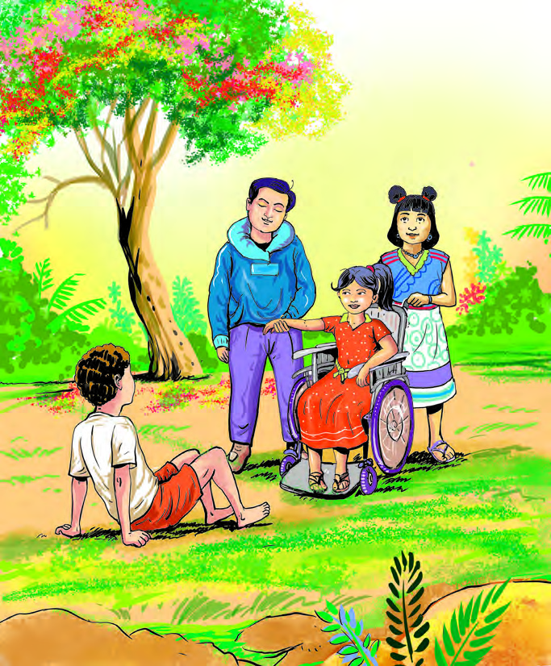
Hey friends,
Our summer holidays are about to end. Before that, Peeli has invited her
classmates to her village. Peeli's four friends are getting prepared for the
trip to the village. Don’t you also like to travel? Shall we also go to Peeli’s
village with them?
1
Peeli’s Village
Peeli’s Village
Page 8
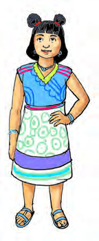
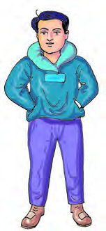
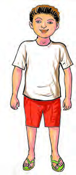
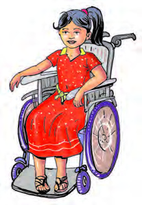

8
Social Science Class V
I am Chameli. We are natives
of Assam. My Ma, Paapa
and I have been living in
Kerala for many years. We
came to Kerala when I was
five years old. We live in a
place where people from
other states live together.
I am Neenu. I
move around on
a
wheelchair.
My home is at
the Government
officers’ quarters
near the city. I
have a younger
brother also.
My name is Appu.
My house is in a
slum in the city. I
have only Amma at
home. My Amma is
a worker in a textile
mill.
Guest workers are coming to Kerala from other states. Most of them
come as families from the states of Assam, Bihar, West Bengal and
Jharkhand. Their children are being educated in public schools in
Kerala. Thus, Chameli is also studying in Kerala. Chameli calls her
mother and father 'Ma' and 'Pappa' respectively.
(Draw your picture here)
My name is .............................................
......................................................................
......................................................................
......................................................................
......................................................................
......................................................................
My
name
is
Vicky. I live in an
Apartment in the
city. My Pappa is
a businessman. My
Mom runs her own
textile shop.
Let's get to know each other before our trip.
Introduce yourself as the fifth person in the group by drawing your picture.
Page 9
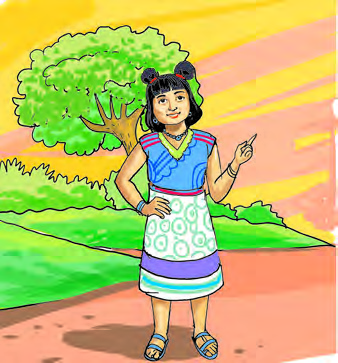
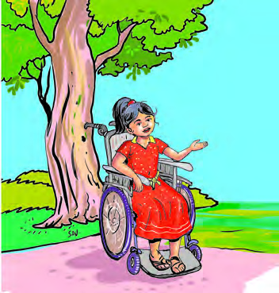
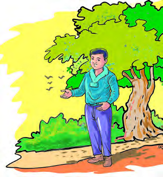
9
Peeli’s Village
Have you introduced yourself? Try to create an extended personal
profile (personal information) by adding your hobbies, leisure time
activities, wishes and dreams along with the information you have
already mentioned. Your teacher will also help.
Today we are going to undertake a trip
which we have been longing for a long
time. At last, we are leaving today. I tried
really hard to get permission from home.
You know that I don’t go everywhere.
Pappa and Mummy reluctantly
let me go. They don’t allow me
to go to places far away alone.
I had to struggle hard to get
consent. You are the only friends
I have here. Mummy has strictly
asked me not to eat anything
from there.
Ma is always scared whereever I go.
Most of the people here keep a distance
while dealing with us. I have told Peeli
about this. She has assured that no one
in her village will keep distance. That's
why I am coming.
Let's get ready for our trip
Page 10
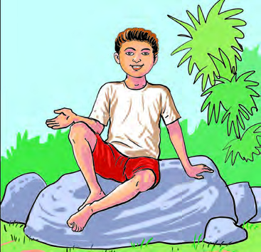
10
Social Science Class V
How did these friends become so close even when they hail from
different backgrounds? Imagine the situation in which they became
friends. Present a roleplay in the class.
Aren't you also ready to travel with them? Don't you too have some
concerns? Draw yourself below and write your thoughts here.
Amma didn't object to. I am
worried that she will be alone
at home when I go. Anyway, it’s
just for a day. It will be alright.
Page 11
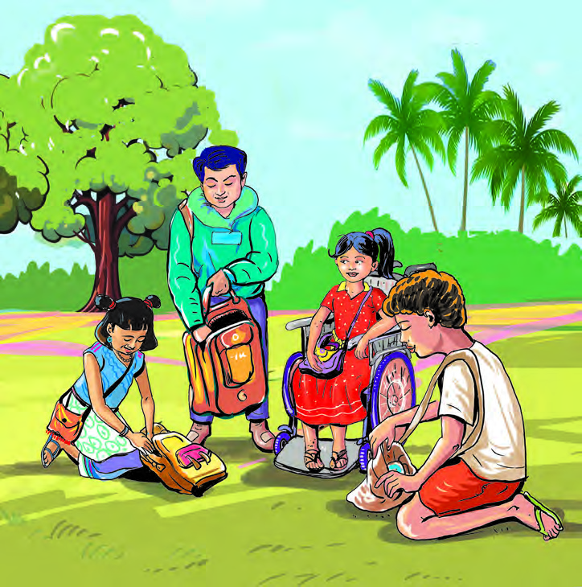
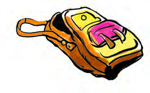
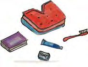
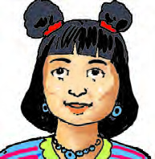
11
Peeli’s Village
Will others set me
aside?
Don't we make some preparations before every trip? We also get mentally
prepared based on our destination, purpose and mode of transport.
Don't our thoughts also come along with the things in the bag which we
set for the trip? Let's see what they carry in their bags.
Page 12
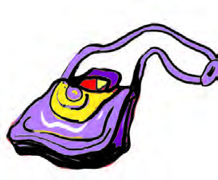
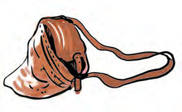
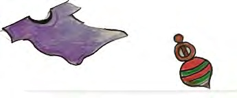
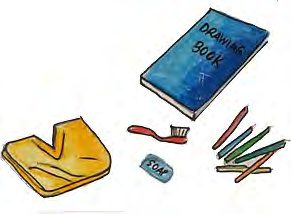
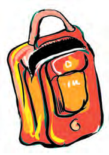
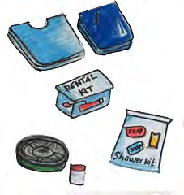
12
Social Science Class V
Will Amma be
alone?
Will there be
facilities of the city?
Can I visit all the
sites there?
What will you take along with you, for the trip? What are the things
that you will think about? Draw your bag and belongings and write
your thoughts below and present the same.
Page 13
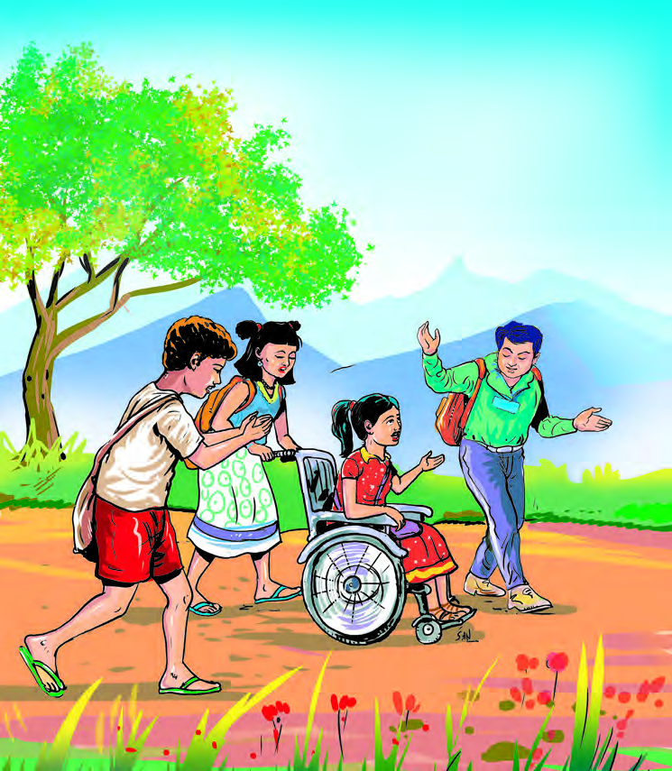

13
Peeli’s Village
Do you know travel songs? Collect and present them as groups in
class. Write down your favourite travel song below.
We are on our way to
see the world…
And travel near and far…
To Peeli’s Village
Shall we
sing a
travel song
together?
Page 14
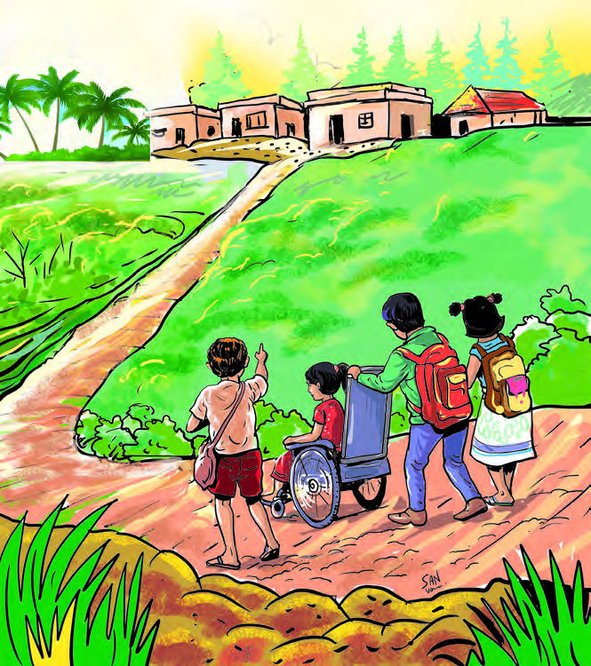
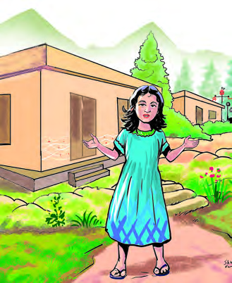
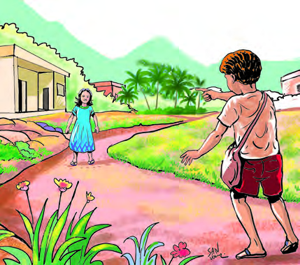
14
Social Science Class V
Ah! that is Peeli’s
Village.
There is Peeli!
I have been waiting here for
a long time. Why are you
so late?
Peeli’s Village
Page 15
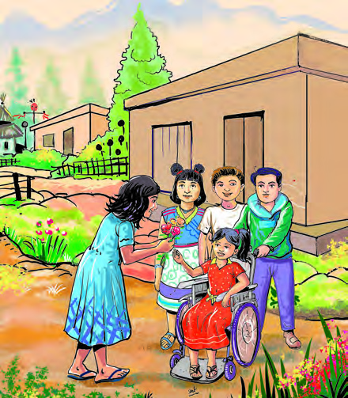
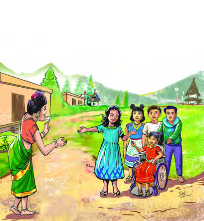
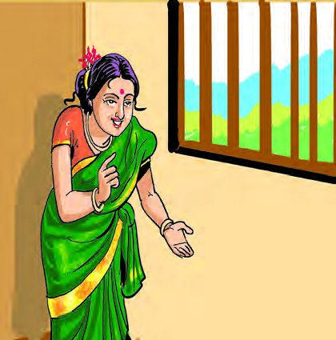

15
Peeli’s Village
Come. Let’s go
home.
Come on everybody.
You all must be
tired by walking
so long. Let's have
a meal first.
What are your
expectations about
Peeli’s Village?
. . . . . . . . . . . . . . . . .......
. . . . . . . . . . . . . . . . . . . . . .
. . . . . . . . . . . . . . . . . . . . . .
. . . . . . . . . . . . . . . . . . . . . .
. . . . . . . . . . . . . . . . . . . . . .
. . . . . . . . . . . . . . . . . . . . . .
Imagine Peeli's Village and
draw it in your notebook. You
can also reach out to your
teacher for help.
This is my
Amma.
Write your response to Peeli.
Page 16
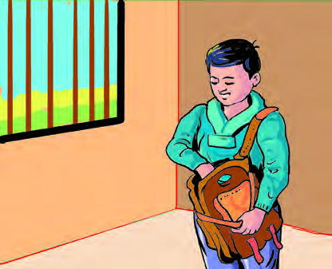
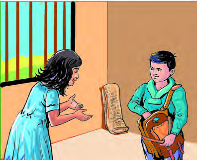
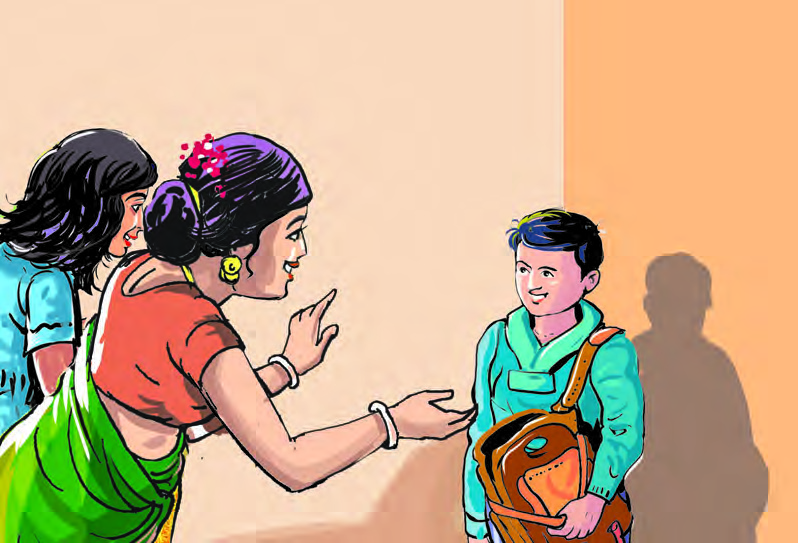
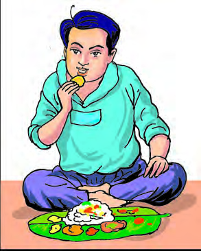
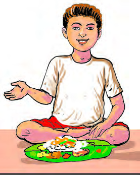
16
Social Science Class V
I have brought my
own food from home.
I will eat that.
Oh… How
haughty he is!
Dear, isn’t that what you eat daily? Try eating
this. The rice we eat is from paddy grown
in our own fields. We mill it ourselves.
And then there's tapioca. There is also fish
caught by Peeli's father from the river. Fish
curry is made by father himself.
This is the first time I am
having such delicious food.
We don't buy anything like
this at home.
Peeli... this food is
really good. How
delicious it is! You
should share the
recipe, okay?
Page 17
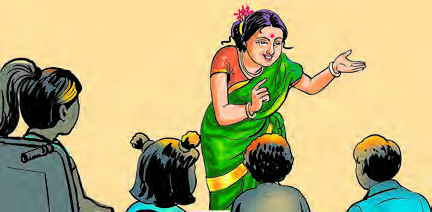
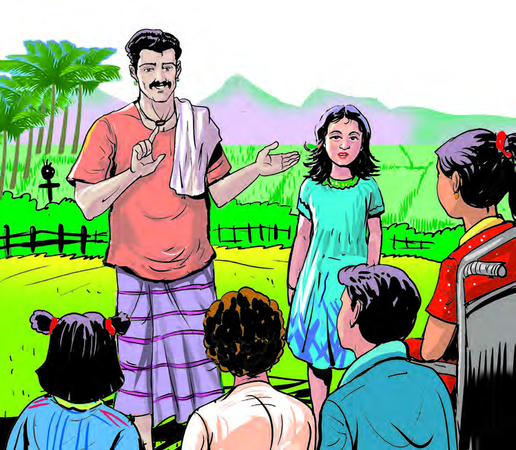

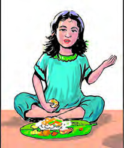
17
Peeli’s Village
We can ask father
himself.
Father will be in the field.
Go there. You all can see
our village too.
Shall we interview Peeli’s father? Prepare a questionnaire for
that. Teacher will also help.
…That’s how we
make food.
ST-299-2-SOC. SCI.(E)-5-VOL-1
Page 18
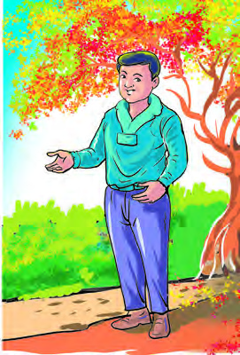

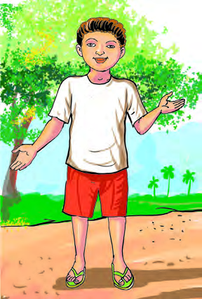
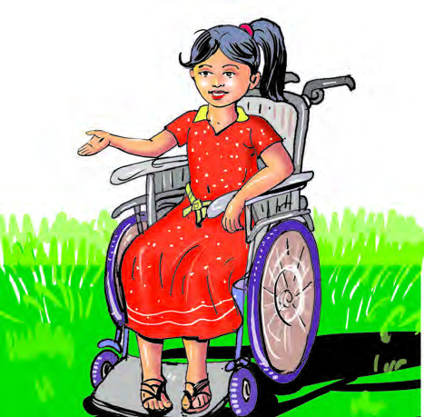
18
Social Science Class V
…Nice. I too want to
learn to cook all these.
Shall we make a dish for friends? Prepare a dish using edible items
collected from your locality. With the help of elders prepare and
bring it to the classroom. Hope you would share the food items
that you bring with everyone in the class.
I think this
place is more
interesting than
the city.
I liked this place very much. But uncle,
I have a doubt. Won't you feel bored
without good network coverage and
Wi-fi connectivity?
What will you do if you wish to play a
game, Peeli? How do you feel happy
without any games? If we were in city
we could do many things.
Page 19
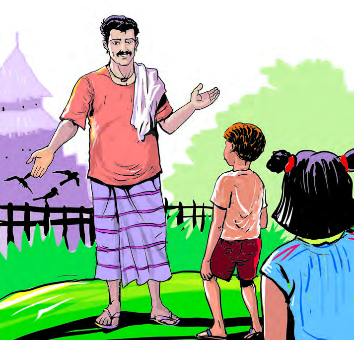

19
Peeli’s Village
Come on. We can also go with Peeli's father and see the different
streams of fun in the village.
The Rustic Beauty
Walk through Peeli’s village and see how simple and beautiful it is.
You too have experienced moments of happiness in your life,
haven't you? What things make you happy? With the help
of digital devices in the school make a selfie video titled ‘My
Happiness’ under the supervision of your teacher.
Why would have Vicky and Appu said two different opinions about
the same city?
There are various games
here too. Come on, let’s
go and see how the
children are playing and
having fun here.
Page 20
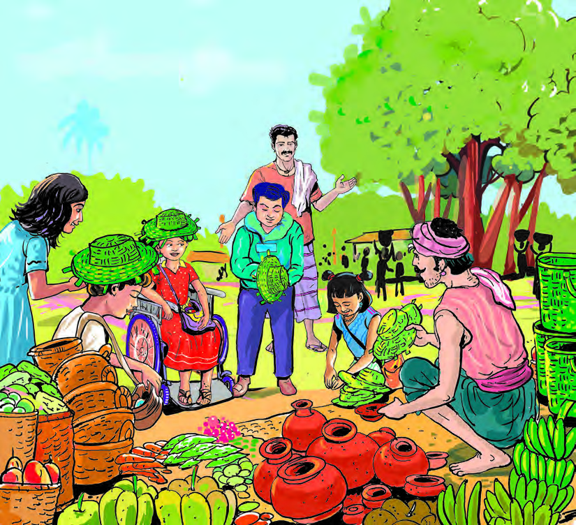
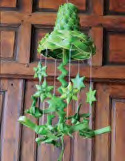
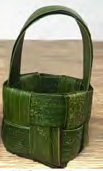
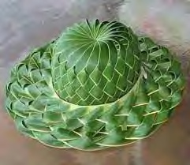
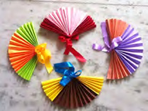
20
Social Science Class V
Peeli's father gifted her friends hat made of coconut fronds, baskets and
clothes.
Villagers come to the weekly
markets to buy and sell the locally
produced goods.
There are weekly, regular and evening markets in your locality,
right? Visit a market with your elders. Observe the activities there
and prepare notes.
What things can you make out of coconut fronds, paper, etc.?
Exhibit your products in the class.
Page 21
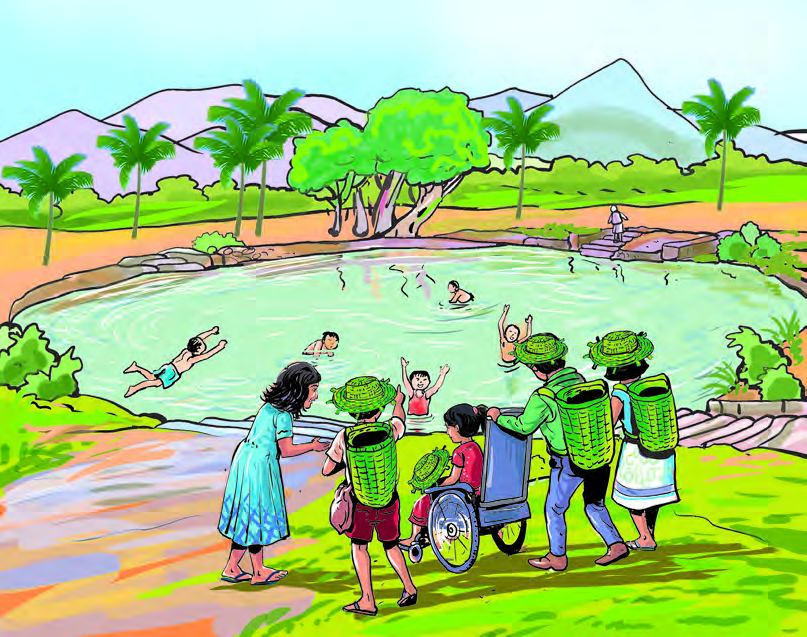
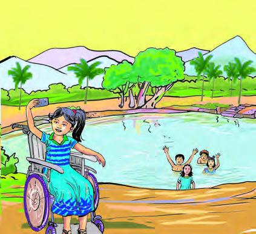
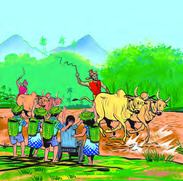
21
Peeli’s Village
There are many such ponds
in this village. My friends
and myself learnt to swim
in these ponds.
Oh, how happy
I am when I see
them all enjoying!
Bull surfing competitions (Kalapoott
malsaram) are held in fields that have
been ploughed for the second crop after
harvest.
Page 22
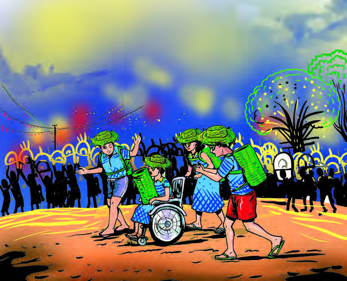

22
Social Science Class V
This is the festival
in our village
Aren't there different
kinds of festivals in
your locality too? Ask
the elders in your family
about the celebrations
such as festivals, feasts,
Uroos, fairs, sports
competitions, etc and
prepare a description.
Share your experience in
the class of watching and
enjoying these fests with
the elders in the family.
You are returning with your friends and Peeli at night after watching
the sights in the village. How about composing and singing a song
at this time? Shall we compose a song titled ‘My Village’? Write
a song covering the villages you have seen and Peeli's village and
sing it to the class in your own rhythm.
Page 23

23
Peeli’s Village
Peeli, how happy is your
village and the villagers!
I just can’t wait to tell
Amma about these sights.
Find a spot in your place where you can see a night view. What are
the sights do you see? Let's draw them. Organise a picture exhibition
in the class with all the pictures drawn by all of you under the title
'My Night and Sky'.
Page 24

24
Social Science Class V
I thought city life alone has fun.
That thought changed after this
trip.
My Ma has told me that my
native village is also like this.
Before starting the trip, you might have had different preconceived
notions about Peeli's village, the ways of happiness and the life of other
people. You had always viewed the world through such thoughts till
then, hadn't you? Didn't you give up many such preconceived notions
during this journey? Didn't you gain some new experiences and
knowledge? Listen to Peeli's friends.
Friends who visited Peeli's village with you have shared their opinion.
Don't you also have something to say about Peeli's village? Write
how the sight of the village influenced you.
Page 25

25
Peeli’s Village
I thought I would be
happy only with the
advanced facilities in
the city. Such a thought
has changed.
I was thinking the same as Vicky said.
We had our own happiness there. I
understood that there is happiness
everywhere.
I was afraid that everyone would
see me as a kid from another
state and might set me aside. It
has changed.
I never thought I could
experience these sights and
enjoy.
These children have corrected their preconceived notions, haven't
they? You too have travelled through Peeli's village. What are the
new pieces of information you gained during this journey? Share
your experience with your friends.
Page 26

26
Social Science Class V
1. Collect pictures showing the characteristics of rural and urban
areas and prepare an album.
2. Prepare a video documentary with the support of your teacher
including the social characteristics of your locality.
3. Organise a seminar on the topic 'Fun in my locality'.
The seminar topic should cover:
Environment
Food habits
Agriculture
Market
Games and playgrounds
Celebrations
Sights at night
Extended Activities